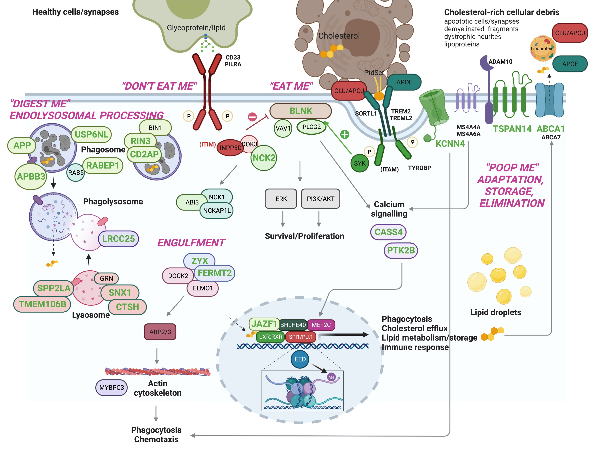
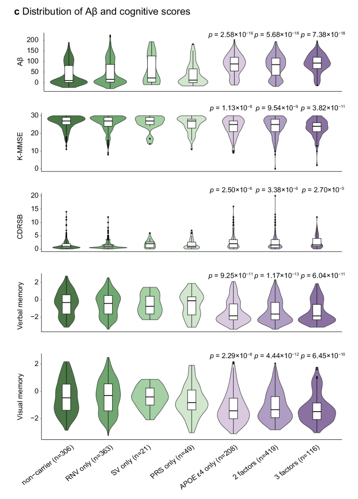
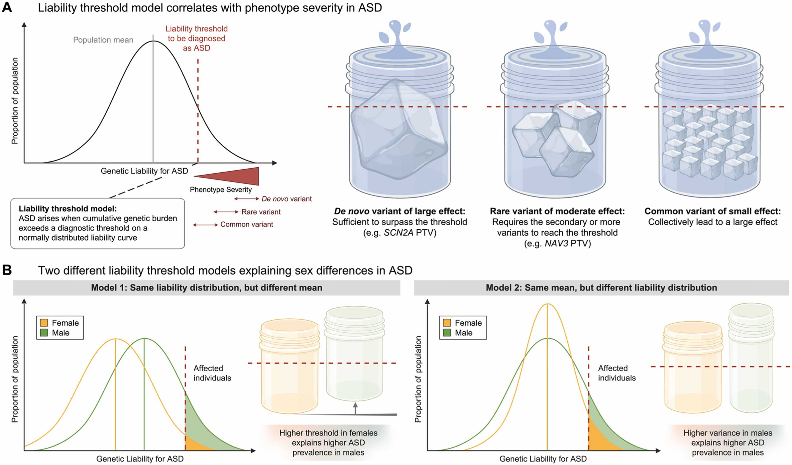
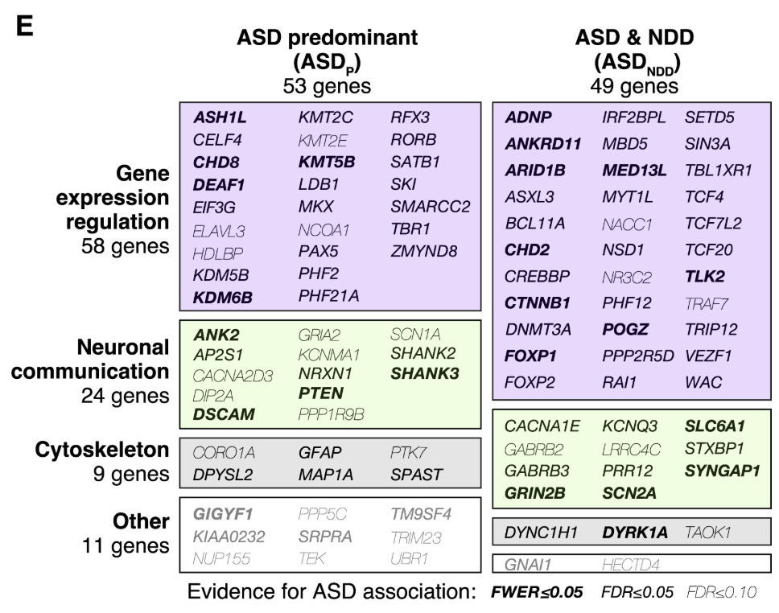

BSMS205 · Genetics
Genetic Architecture
Chapter 19 · Part III · Complex Traits
Welcome to Chapter nineteen, the final chapter of Part Three on complex traits, and the last chapter we will cover before the midterm. Last time, in Chapter eighteen, we walked through how genome-wide association studies work — how millions of common variants are screened and how Manhattan plots reveal hits. Today we step back and ask a bigger question. Once you have all those hits, what shape do they take across the genome? How do rare and common variants fit together for one disease? That structure is what we call the genetic architecture, and it is the through-line of today's lecture.
A question from Chapter 18
GWAS gave us hundreds of hits.predict who gets sick?
Here is the puzzle we left hanging at the end of Chapter eighteen. GWAS, with hundreds of thousands of cases, has identified hundreds — sometimes thousands — of variants associated with diseases like Alzheimer's or schizophrenia. So why is genetic prediction still so imperfect? Why do some people with high-risk variants stay healthy, while others with seemingly low risk get sick? The answer is not that GWAS failed. The answer is that disease risk is shaped by a layered structure of genetic influences, and you cannot read that structure from a single hit list. You have to see the architecture.
Genetic architecture · the working definition
architecture = (allele frequency) × (effect size) × (locus count)
Allele frequency · how rare or commonEffect size · how strong each variant pushes riskLocus count · how many sites contribute
Here is the working definition we will use today. Genetic architecture is the joint structure of three things: how rare or common each contributing variant is, how strongly each one pushes disease risk, and how many such loci exist across the genome. You will see that a single disease can have variants spanning the full range — from one-in-a-million mutations with massive effects, to common alleles that nudge risk by a tiny amount but exist at hundreds of loci. The architecture is the full picture, not any one slice.
The city analogy
City
A few skyscrapers — huge, rare
Many houses — small, common
Roads, utilities, neighborhoods
Genome
A few rare-large mutations
Many common-small variants
Modifiers, interactions, context
Think of architecture like a city. A city is not just buildings — it has skyscrapers, houses, roads, utilities, neighborhoods, all woven together. Some structures are huge and rare, like a downtown tower. Others are small but everywhere, like single-family homes. Genetic architecture works the same way. A few rare mutations have massive effects, a flood of common variants each have tiny effects, and on top of all of that you have modifiers, interactions, and environmental context. A city does not function from the skyscrapers alone, and neither does a disease.
The canonical picture
Figure 1. The master picture for genetic architecture: allele frequency on the x-axis, effect size on the y-axis. Rare-large variants in the upper left, common-small variants in the lower right. Andrews et al. 2023, EBioMedicine .
Hold this figure in your head for the entire lecture. On the x-axis, allele frequency — how rare or common a variant is. On the y-axis, effect size — how strongly the variant pushes risk. Plot every Alzheimer-associated variant on this grid and you get a surprisingly orderly picture. Rare variants like APP and PSEN1 mutations land in the upper-left — extremely rare, enormous effect. Common GWAS hits land in the lower-right — common but tiny effect. APOE epsilon four sits awkwardly in the middle — common enough to study, strong enough to matter. This single chart is the canonical way to draw the architecture of any complex disease.
Roadmap for today
What does an architecture look like?
Case study · Alzheimer's disease
Case study · autism spectrum disorder
Genetic heterogeneity → biological convergence
Why architecture matters · drugs, PRS, counseling
The omnigenic horizon
Summary · bridge to Part IV
Here is how we will move today. First, we sharpen what genetic architecture actually means and look at the canonical Andrews diagram in detail. Then we walk through two flagship case studies — Alzheimer's and autism — because together they show the full range of architectures complex disease can take. Third, we step back and ask why so many genetic routes lead to the same clinical endpoint, which gets us to convergence. Fourth, we discuss what this means for drug development and polygenic scores. Fifth, we touch on the omnigenic model, the most provocative current proposal. And we end by bridging to Part Four after midterm.
§ 1
What does an
Let's spend a few minutes with the geometry of the picture itself. Once you understand the four zones of the frequency-effect plot, every disease in the rest of the lecture will fit into them.
The four zones
Frequency Effect What lives here
Rare Large Mendelian mutations · APP, PSEN1, BRCA1 Rare Small Hard to find · usually invisible Common Large Almost empty · selection removes themCommon Small GWAS hits · the polygenic background
The frequency-effect plot has four zones. Upper-left, rare and large effect, is where Mendelian disease genes live — APP, PSEN1, BRCA1. Lower-left, rare and small, is essentially invisible to current methods because each variant is too rare to detect a tiny effect. Upper-right, common and large, is conspicuously empty — a variant that is both common and harmful gets filtered out by natural selection over generations. Lower-right, common and small, is where the typical GWAS hit sits — easy to find with large samples, but each one barely moves risk. The whole architecture is the population of points across these four zones.
Why no common-large?
A common allele with a large harmful effectremoved by selection .
Strong effect → reduced reproduction
Allele frequency drops over generations
Result: the upper-right zone is nearly empty
Why is the upper-right corner of that plot almost empty? Because evolution is not patient with strongly harmful common alleles. If a variant cuts your reproductive success and is at high frequency, every generation strips a fraction of it out of the population. Over evolutionary time, common-large variants either drift down to rare or are removed entirely. The exception is variants that exert their effect after reproductive age — which is why something like APOE epsilon four, an Alzheimer's risk allele acting in your seventies, can persist at fifteen percent frequency without ever being selected against.
Common-small or rare-large?
Rare-large
Mendelian disease genes
Family pedigrees, exome sequencing
~1% of cases each
Common-small
GWAS-style signals
Hundreds of thousands of cases
Tiny effects · summed via PRS
Most diseases sit on the spectrum between .
Two extreme strategies dominated genetics in different eras. The rare-large hunt — pedigrees, linkage, then exome sequencing — is how Mendelian disease genes were found. Each variant explains roughly one percent of cases, but the explanation is mechanistic and clean. The common-small hunt — GWAS — is how the polygenic background was uncovered, but it requires hundreds of thousands of samples and each hit has tiny effect. Most real diseases sit on the spectrum between these poles. The job of the modern human geneticist is to map both ends and the middle.
Variant types contribute too
SNVs · single-letter changesIndels · small insertions / deletionsCNVs · duplications and deletions of segmentsStructural variants · large rearrangementsRegulatory variants · noncoding, change expression
Architecture is not only about frequency and effect. The kind of variant matters too. Single nucleotide variants — single-letter changes — are the most common. Indels are small insertions or deletions of a few bases. Copy number variants and structural variants are larger rearrangements that delete or duplicate whole segments of DNA. And then there are noncoding regulatory variants that do not change a protein at all but tweak when or where a gene is expressed. Different diseases lean on different variant classes. Autism, as we will see, leans heavily on de novo CNVs and protein-truncating variants. Schizophrenia leans on common SNVs. The architecture must specify not just where the variants sit, but what kind they are.
The composite reality
No single "disease gene"
Most traits show a composite architecture
Mixture of rare + common + modifiers
Same diagnosis · many genetic routes
Many roads · same destination.
The headline of modern human genetics is this. For almost every common disease we have studied with whole-genome sequencing and large GWAS, the architecture is composite — a mixture of rare and common variants, with modifiers and interactions on top. There is no single disease gene. The same diagnosis can arise through many different genetic routes. Two patients in the same Alzheimer clinic might have completely different variants behind their disease. We will see this concretely in the next two case studies.
§ 2
Case study
Now let's look at our first concrete architecture — Alzheimer's disease, the most common cause of dementia. Alzheimer's is the textbook example because all four zones of the frequency-effect plot are populated, and we know enough about the underlying biology to see where the variants converge.
Three layers of risk
Layer Examples Frequency Effect (OR)
Rare-large APP, PSEN1, PSEN2 < 1% ~100× Strong common APOE ε4/ε4~2% ~12× Common-small GWAS hits (TREM2, ABCA1 …) 5 – 40% 1.1 – 1.5×
Alzheimer's risk lives in three layers. The first layer is rare, large-effect mutations in three genes — APP, PSEN one, and PSEN two — that cause early-onset familial Alzheimer's. If you carry one, your risk is essentially one hundred percent, but these mutations explain less than one percent of all cases. The second layer is the APOE epsilon four allele, the strongest common risk factor we know about. One copy roughly triples your risk, two copies push it about twelve-fold. About two percent of people of European ancestry carry two copies. The third layer is the long tail of GWAS hits — TREM two, ABCA one, and dozens more — each common but each only nudging risk by ten to fifty percent. The full architecture is all three layers stacked.
Layer 1 · early-onset familial AD
Three genes: APP · PSEN1 · PSEN2
Symptoms before age 65 — sometimes 30s–40s
Penetrance ~100% if you carry one
But: explains < 1% of all AD cases
The first layer — early-onset familial Alzheimer's — is the Mendelian fraction. Three genes. APP encodes amyloid precursor protein, the source of amyloid beta itself. PSEN one and PSEN two encode the catalytic subunit of the gamma-secretase enzyme that cleaves APP. Mutations in any of these three throw amyloid processing out of balance, plaques accumulate early, symptoms can appear in the thirties or forties, and penetrance is essentially complete. These are the rare-large dots in the upper-left of the frequency-effect plot. They are devastating, mechanistically informative, and they explain less than one percent of cases.
Layer 2 · APOE ε4
~12×
risk for ε4/ε4 homozygotes
3 alleles: ε2 · ε3 · ε4
~15% of Europeans carry at least one ε4
1 copy: ~3× risk · 2 copies: ~12×
Common and strong — rare combo
APOE epsilon four sits in a strange and important spot on the architecture plot. APOE has three common variants — epsilon two, three, and four. Epsilon three is the reference. Epsilon four is the risk allele. About fifteen percent of Europeans carry at least one copy, which is common by any standard. But its effect is unusually strong — one copy roughly triples Alzheimer risk, two copies push it about twelve-fold. That is large enough that some researchers argue homozygous epsilon four carriers should be reclassified as a deterministic genetic form of late-onset Alzheimer's. Common, and strong, in the same allele. The reason it survives at fifteen percent frequency is that it acts after reproductive age, so selection is essentially blind to it.
Layer 3 · the polygenic background
Large meta-GWAS · hundreds of thousands of cases
Implicated pathways:
Immune · microglia (TREM2)Lipid · cholesterol handling (ABCA1, APOE)Synaptic · neuron–neuron signaling
Each hit small · together they shift risk
The third layer is the polygenic background — dozens of common variants, each with tiny effect, identified by large GWAS meta-analyses like Bellenguez two thousand twenty-two. The hits cluster into three biological themes. First, immune function — especially microglia, the brain's resident immune cells. Second, lipid metabolism — the brain handles enormous amounts of cholesterol, and dysregulation matters. Third, synaptic function. Each individual hit barely moves risk. But sum them into a polygenic score and the top decile is meaningfully higher risk than the bottom decile, even with no APOE epsilon four and no Mendelian mutation.
Convergence · microglial efferocytosis

Figure 2. Many AD risk genes — both rare and common — converge on microglial efferocytosis: the process by which microglia clear dead cells and debris. Andrews et al. 2023, EBioMedicine .
Here is the convergence story. Despite the genetic diversity — three Mendelian genes plus APOE plus dozens of GWAS hits — many of these genes funnel into a single biological process: microglial efferocytosis. That is the process by which microglia, the brain's garbage-collector cells, recognize damaged neurons and protein aggregates and clear them away. TREM two recognizes the eat-me signal. ABCA one and APOE handle the cholesterol byproducts of digestion. If this clearance pipeline is impaired, amyloid accumulates, and you get the disease. The architecture is heterogeneous at the gene level but startlingly convergent at the pathway level.
Risk accumulates · the K-ROAD cohort

Figure 3. Korean Rare Alzheimer's Database (K-ROAD): more risk factors → higher amyloid burden, lower MMSE, worse memory. Risk is cumulative . K-ROAD 2025, Nat Commun .
Here is concrete evidence that the layers add up, and it comes from a Korean cohort — important because most genetic studies are still skewed toward European ancestry. The K-ROAD consortium grouped patients by how many genetic risk factors they carried — APOE epsilon four, high polygenic score, rare noncoding variants, structural variants. As you move from no risk factors to one to two to three, amyloid burden climbs, MMSE cognitive scores drop, dementia severity worsens, and memory deteriorates. All four panels show statistically significant trends. This is composite architecture in action — the architecture is not just descriptive, it predicts patient outcomes when you can measure all the layers at once.
Why a Korean cohort matters
Most GWAS data: European ancestry
Allele frequencies differ by population
K-ROAD captures Korean-specific signals
Same architecture · different dot positions
The picture has the same shape.
A quick aside on why population-specific cohorts like K-ROAD matter. Most GWAS data is dominated by European ancestry samples, which means our polygenic scores work best for Europeans and increasingly worse for everyone else. Allele frequencies genuinely differ across populations — a variant that is common in Europe might be rare in Korea or vice versa. The architecture as a structural concept is the same — rare-large mutations, an APOE-like strong common allele, and a polygenic background. But the specific points on the plot move. Korean-ancestry studies like K-ROAD are essential because precision medicine needs population-appropriate data.
The composite Alzheimer model
Patient A · PSEN1 mutation · early-onset
Patient B · APOE ε4/ε4 · onset late 60s
Patient C · high PRS + vascular risk · onset late 70s
Same diagnosis · three different architectures
Imagine three patients in the same Alzheimer's clinic. Patient A carries a PSEN one mutation and developed symptoms at forty-eight. Patient B is APOE epsilon four homozygous, onset at sixty-eight. Patient C has no rare mutation and no APOE epsilon four, but sits in the top five percent of the polygenic risk distribution, plus untreated hypertension and diabetes — onset at seventy-eight. All three carry the same clinical diagnosis. All three have wildly different genetic architectures. That is the heart of what we mean by composite architecture.
§ 3
Case study
Now a contrasting architecture — autism spectrum disorder. Alzheimer's is heavy on rare-large plus common variants. Autism leans on a different mix that includes de novo mutations, inherited rare variants, and a polygenic background. It is perhaps the most genetically heterogeneous condition we will discuss.
Four genetic contributors

Figure 4. ASD architecture has at least four contributing layers: de novo CNVs, de novo PTVs, inherited rare variants, and common SNP polygenic risk. Kim et al. 2025, Mol Cells .
Autism architecture has at least four layers, all stacked on the same individual. De novo copy number variants — large duplications or deletions that arose new in the child. De novo protein-truncating variants — single-base or small mutations that knock out a gene, also new in the child. Inherited rare variants passed down from parents. And a polygenic background of common SNPs explaining roughly thirty to forty percent of population liability. No single layer explains autism. They all contribute, in different mixes for different children.
De novo variants · the new mutation
Not inherited from either parentArise in sperm, egg, or early embryo
Two key flavors:
dnPTV · de novo protein-truncatingdnCNV · de novo copy-number
Each rare · together major contributor to severe ASD
De novo variants are mutations that are not present in either parent — they arose new in the sperm, egg, or very early embryo of the affected child. There are two flavors that matter for autism. De novo protein-truncating variants — mutations that introduce a premature stop codon and knock out one copy of a gene. And de novo copy number variants — large deletions or duplications. Each individual de novo mutation is by definition rare. But because they accumulate across hundreds of different genes affecting brain development, collectively they explain a meaningful fraction of severe autism — especially level three cases requiring substantial support.
Inherited rare + polygenic
Inherited rare
From parents who may not have ASD
Each tiny effect
Add up across the genome
Polygenic (common)
~30–40% of liability
Standard GWAS-style variants
Modulates rare-variant effects
Beyond de novo variants, autism risk also comes from inherited rare variants — passed from parents who themselves may not have autism. Each one slightly increases risk, and they accumulate. Then on top of that is the polygenic background of common SNPs, which together explain roughly thirty to forty percent of population-level liability. And here is the key interaction — the polygenic background modulates the impact of rare variants. A child with a rare protein-truncating mutation against a high-polygenic-risk background is more likely to be diagnosed than the same mutation against a low-polygenic-risk background. Layers do not just add — they multiply.
Convergence · synapse + chromatin

Figure 5. Despite hundreds of genes, ASD-associated variants converge on two major hubs: synaptic signaling and chromatin regulation . Satterstrom et al. 2020, Cell .
And here is the convergence story for autism. Satterstrom and colleagues sequenced the exomes of more than thirty thousand individuals, identifying about a hundred autism risk genes. The genes are extremely diverse, but they cluster into two major functional hubs. The first hub is synaptic signaling — how neurons communicate with each other. The second hub is chromatin regulation — how DNA is packaged and which genes get turned on or off. Many roads, two main destinations. Different children with autism may carry mutations in completely different genes, but those genes funnel into shared developmental processes.
Mid-fetal cortex · timing matters
Many ASD genes peak in mid-fetal cortex
Specific developmental window · weeks 12–24
Timing × tissue × pathway = phenotype
Same gene · different impact at different ages
Architecture is not just frequency and effect — it is also about when and where. Many autism risk genes are most highly expressed during a specific developmental window, mid-fetal cortical development, roughly weeks twelve to twenty-four of gestation. That is when the cortex is being built, and disrupting these genes during that window has lasting consequences. The same gene, the same mutation, would have a much milder effect if it were active in adulthood. Timing, tissue, and pathway combine to produce the phenotype.
The female protective effect
4×
more males than females diagnosed
Females need higher genetic burden
Affected females carry more rare variants
Biological + diagnostic factors
Autism is diagnosed about four times more often in males than in females. The leading explanation is the female protective effect — females appear to require a higher genetic burden to cross the diagnostic threshold. Affected females carry on average more de novo mutations and more rare variants than affected males. Some of this is biological — X-linked genes, hormonal effects. Some is diagnostic — females with autism may present differently and be underdiagnosed. The point for today is that sex modifies how the architecture maps onto a diagnosis. Same dots on the plot, different threshold lines.
§ 4
Many roads
Step back. We have just walked through two diseases with very different architectures. Yet a common pattern emerged in both — diverse genetic causes funneling into a small number of biological pathways. Let's name that pattern explicitly.
Genetic heterogeneity
Locus heterogeneity · different genes → same phenotypeAllelic heterogeneity · different mutations in same gene → different effectsPhenotypic heterogeneity · same variant → different patients
Three flavors of heterogeneity to keep straight. Locus heterogeneity — different genes can produce the same phenotype. In dilated cardiomyopathy, mutations in TTN, LMNA, DSP, or FLNC all lead to a weakened heart. Allelic heterogeneity — different mutations within the same gene can have different effects. A missense mutation in TTN might cause mild disease, a truncating mutation severe early disease. Phenotypic heterogeneity — the same variant in different patients can manifest differently depending on the rest of their genetic background, age, sex, and environment. All three forms blur the simple Mendelian map of genotype to phenotype.
Biological convergence
Disease Convergent pathways
Alzheimer's Microglial clearance · lipid metabolism · amyloidAutism Synaptic signaling · chromatin · neurodevelopmentDCM (heart) Sarcomere · cell adhesion · ECM Schizophrenia Synapse · immune · dopamine
And here is the flip side — biological convergence. Despite the gene-level heterogeneity, every well-studied disease shows a small number of pathways where the variants accumulate. Alzheimer's converges on microglial clearance, lipid metabolism, and amyloid processing. Autism converges on synaptic signaling, chromatin regulation, and neurodevelopment. Dilated cardiomyopathy converges on sarcomere structure, cell adhesion, and extracellular matrix. Schizophrenia converges on synapse, immune, and dopamine pathways. The architecture is messy at the gene level and orderly at the pathway level. That asymmetry is the central insight.
The river analogy
Many small streams · different starting pointssame major rivers
Genes = streams · pathways = rivers · disease = ocean
Heterogeneity at the source · convergence downstream
Here is the analogy I want you to leave with. Think of a river system. Many small streams start in many different places — some in the mountains, some in the forests, some on the plains. They each look different. But as they flow downhill, they merge into the same major rivers, which all reach the same ocean. The starting points are heterogeneous. The downstream destination converges. Genes are streams. Pathways are rivers. The disease endpoint is the ocean. That is why two patients with completely different mutations can present with the same clinical syndrome.
§ 5
Why architecture
So we have a structural picture of how genetic risk is laid out. Why should anyone outside academic genetics care? Three reasons — drug development, polygenic risk scores in the clinic, and genetic counseling.
Drug discovery · target the convergence
Don't fix every mutation · fix the pathway
AD: boost microglial efferocytosis (TREM2 agonists)
ASD: chromatin / synapse modulators
Heterogeneous patients · shared therapy
First, drug development. If hundreds of mutations all funnel into the same pathway, you do not need to design a drug for each mutation. You design a drug for the pathway. In Alzheimer's, TREM two agonists are being developed to boost microglial clearance — the idea is to enhance the convergent pathway regardless of which upstream mutation a patient carries. In autism, chromatin and synapse modulators are early-stage candidates. The convergence picture turns drug discovery from a per-gene problem into a per-pathway problem, which is much more tractable.
Polygenic risk scores · interpreting them
PRS sums many common-small effects
Top decile vs bottom · meaningful risk gap
But: works best in European ancestry
Architecture-aware PRS · across all layers
Second, polygenic risk scores. A PRS is a single number summing the small contributions of many common variants. People in the top decile of PRS have meaningfully higher risk than the bottom decile — for diseases like coronary artery disease, that gap can be as large as a Mendelian risk factor. But PRS today has two big limitations. First, it works best in European ancestry, because that is where most GWAS data come from. Second, it captures only the common-small layer of the architecture. The next generation of risk scores will be architecture-aware — integrating rare variants, common variants, and APOE-like strong common alleles into a single integrated risk estimate.
Genetic counseling · context matters
A pathogenic mutation alonenot tell the whole story.
Same TTN variant · different outcomes
Polygenic background modifies penetrance
Family history + environment + PRS
Third, genetic counseling. Old model — find a pathogenic mutation, declare the patient at risk, end of story. New model — find the mutation, then ask about the rest of the architecture. What is the polygenic background? Are there other rare variants in related genes? What is the family history and the environmental context? Two patients carrying the same TTN cardiomyopathy mutation can have very different outcomes — one has high polygenic risk and develops severe disease at thirty, the other has low polygenic risk and never has symptoms. The mutation is one piece, not the whole answer.
Penetrance is modifiable
Penetrance = P(phenotype | genotype)Modified by:
Polygenic background
Other rare variants (multi-hit)
Sex · age · environment
"100% penetrant" is a Mendelian myth in complex disease
A word on penetrance — the probability that a genotype produces the phenotype. In classical Mendelian genetics, penetrance is often treated as fixed — close to one hundred percent for a pathogenic mutation. In reality, penetrance is modifiable. Polygenic background changes it. Co-occurring rare variants in related genes change it. Sex, age, and environment all change it. Even classic Huntington's disease, long considered fully penetrant, shows variable age of onset shaped by polygenic modifiers. In complex disease, treating penetrance as a single number is a simplification we have to outgrow.
§ 6
The omnigenic
One more horizon to introduce before we close. The polygenic picture says many variants contribute. The omnigenic model — proposed by Boyle, Li, and Pritchard in twenty seventeen — pushes that further. It claims essentially every gene expressed in a relevant tissue contributes, even tiny amounts.
Polygenic vs omnigenic
Polygenic
Hundreds of lociEach tiny · sum matters
Pathway-focused
Omnigenic
Thousands · "all" expressed genesCore genes + peripheral genes
Network-wide effects
Boyle, Li, Pritchard 2017 — provocative, debated, useful frame.
Polygenic says hundreds of loci with tiny effects. Omnigenic says it is thousands, and that essentially every gene expressed in the relevant tissue contributes some effect, however small. The model splits genes into a small number of core genes that act directly on disease biology, and a vast majority of peripheral genes that contribute through gene regulatory networks. The hypothesis is provocative and debated, but it captures something real — when sample sizes get big enough, GWAS keeps finding more hits, and they spread across more and more of the genome. The architecture may be even broader than we think.
What the architecture is for
Predict who is at risk · and how much
Choose drug targets where convergence is strong
Counsel patients with full context
Build cohorts that span ancestries
Move from "disease gene" → disease landscape
Putting it together — what the genetic architecture is actually for. It is for prediction, where the goal is not just yes-or-no risk but a quantitative estimate. It is for drug discovery, where the question is which pathways are worth investing decades of research into. It is for counseling, where the answer to a patient's question is contextual, not categorical. It is for cohort design, where we have to do better than the European-ancestry default. And philosophically, it is the bridge from the Mendelian "disease gene" framing to the modern "disease landscape" framing. That landscape is what Part Three has been building toward all semester.
§ 7
Summary
Let's pull the threads together for Chapter nineteen, and for all of Part Three.
What to take away
Architecture = frequency × effect × locus count
Four zones · the upper-right is empty (selection)
AD: APP/PSEN + APOE ε4 + GWAS hits
ASD: de novo + inherited rare + polygenic
Many genes → shared pathways (convergence)
Drugs target the convergence · PRS sums the polygenic layer
Six points to take away. One — genetic architecture is the joint structure of allele frequency, effect size, and locus count. Two — the frequency-effect plot has four zones, and selection keeps the common-large corner empty for traits that affect reproduction. Three — Alzheimer's architecture has three layers stacked: APP-PSEN Mendelian mutations, APOE epsilon four as a strong common allele, and a polygenic background. Four — autism architecture has de novo mutations plus inherited rare variants plus polygenic background. Five — across diseases, hundreds of genes converge on a few biological pathways. Six — that convergence is what makes drug discovery and risk prediction tractable. Hold those six points and Chapter nineteen will stay with you.
After the midterm
From individualspopulations .
Part IV · Chapter 20 · Allele Frequency
And this is the last chapter of Part Three, and the last chapter before the midterm. Part Three was about complex traits in individuals — heritability, GWAS, polygenic scores, and today, genetic architecture. After the midterm, we shift gears entirely. Part Four is about populations. We start with Chapter twenty on allele frequency, where we will see exactly how the canonical frequency-effect plot we have been staring at all lecture is generated by the dynamics of mutation, drift, and selection over evolutionary time. The architecture is the snapshot. Population genetics is the movie. See you on the other side of the midterm.